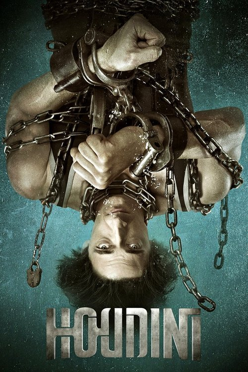

Houdini (2014)
Sinopsis Rápida
Adéntrate en la vida fascinante y misteriosa de Harry Houdini, el maestro del ilusionismo, desde sus humildes comienzos hasta su ascenso a la fama mundial, en una serie llena de suspense, intriga y sorprendentes revelaciones.
Sinopsis Detallada
Esta miniserie de dos temporadas explora la vida del legendario escapista Harry Houdini, mostrando no solo sus asombrosos trucos de magia, sino también su compleja personalidad, sus luchas personales y su compromiso con desenmascarar a los charlatanes y médiums fraudulentos. La serie combina escenas de tensión dramática con momentos de humor, ofreciendo una perspectiva completa sobre un hombre que desafió los límites de lo posible y dejó una huella imborrable en la historia. La producción se destaca por su cuidadosa recreación de época y sus intensas interpretaciones.
¿Por qué tenés que verla?
- Una cautivadora exploración de la vida de una leyenda del ilusionismo.
- Las impresionantes interpretaciones y la fiel recreación histórica te transportarán a otra época.
- La serie ofrece una perspectiva fascinante sobre la figura de Houdini y su impacto en la cultura popular.
- Perfecta para amantes del drama histórico y la magia.
Idea Extra
Comparación de los trucos de Houdini con la realidad: ¿mito o verdad?
{{CONTENIDO_RELACIONADO}}